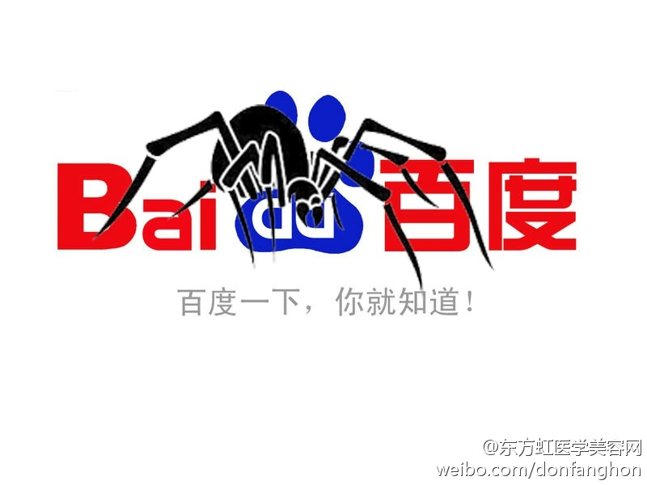
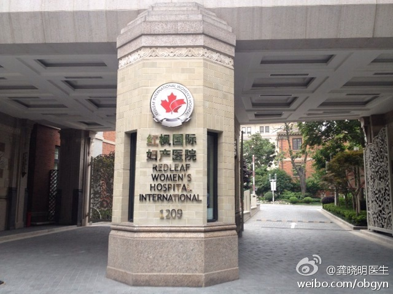
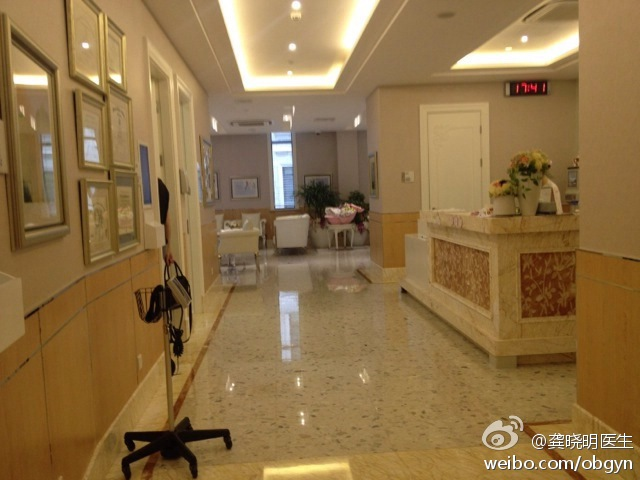
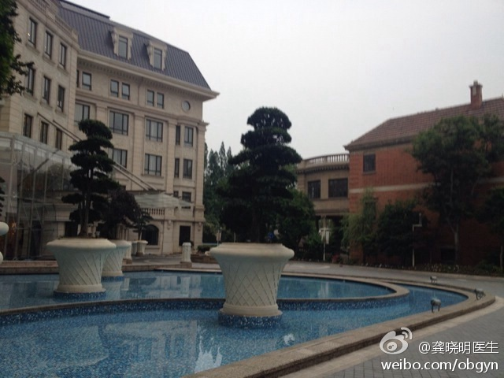
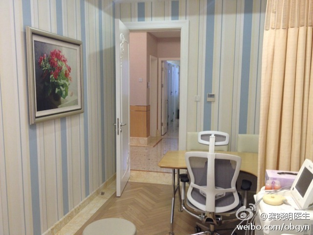
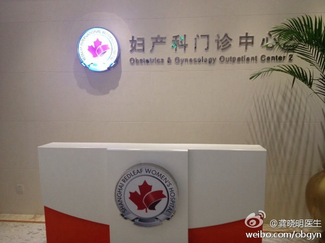
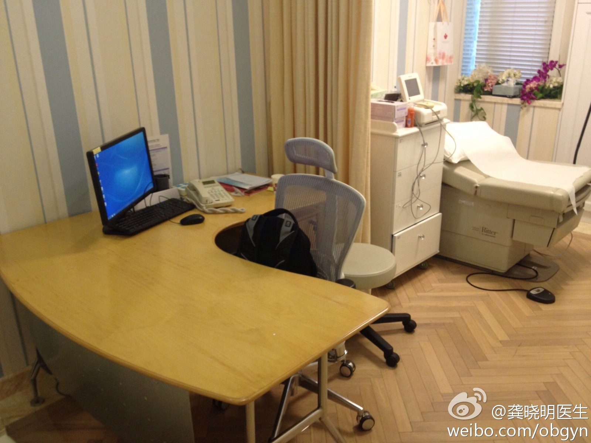

这幽默感，苦中做乐呀。//@孙宏涛医生: 西北风吹大啊 //@果冻儿2013:13块，怎么养家呢？@孙宏涛医生:嗯，出了一下午门诊，看了十位病人，每个副教授的号七元，医院留四块，医生三块，收入共计三十元。中午下手术急，没时间吃饭，下门诊吃牛肉拉面一碗，14元，可乐一瓶3块。预计今日收入13块，不错，不错！
刚知道有个“志愿北京”的网站 网页链接 上面有很多志愿者项目，蛮适合高考完的学生去体验体验。我自己都很想去参加这个项目“守护天使——北京儿童医院“志愿服务365”门诊志愿服务”，网页链接 北京市儿童医院，日诊8000个又哭又闹的孩子，会是个什么情景？
#姣姣#小时带她去过几次北京市儿童医院。那里有摇摇车，而且我也不像平时限制她坐，造成的直接后果是，她经常主动闹腾要去“儿童医院”玩！至于被扎针输液的烦恼，她倒是不记得了。[呵呵]@Ada李力:刚知道有个“志愿北京”的网站 网页链接 上面有很多志愿者项目，蛮适合高考完的学生去体验体验。我自己都很想去参加这个项目“守护天使——北京儿童医院“志愿服务365”门诊志愿服务”，网页链接 北京市儿童医院，日诊8000个又哭又闹的孩子，会是个什么情景？
我发表了文章《Community与Social的关系》。昨天夜里@粥稀稀的碗 提了个问题，我一时也觉得难以回答。今天想了想，把一些思路整理了下，抛了砖，希望和大家一起讨论。 Community与Social的关系
回复@_xshell:《揭秘美国医疗制度及相关产业》，电子书，亚马逊有售。//@_xshell:真的假的？你实际调研过还是某些书本看来的？@Ada李力:#读书#从历史形成过程来看，医院从来不是盈利性机构，而是慈善机构。大多数美国私立医院保持着非盈利以及依靠捐赠的特点，而且至少在成立的早期，有宗教组织的背景。
回复@阿朱:差不多哈。//@阿朱:我的社交圈是通过QQ群、BBS、博客、微博、微信群这些线上工具扩展的，线下工具一般都是大会、沙龙聚会这两种形式扩展的//@Ada李力:从我自己的经验看，现在的社交平台和工具，还是比以往的交流沟通工具，更快更好地拓展我的社交圈。[呵呵]@每日打开:@Ada李力 我是这么看community和social的 网页链接
也许有我们没看懂的地方吧。[呵呵]//@李智勇SZ:我近来逐渐认识到知乎的路其实走偏了，当然这不影响它是一款成功的产品，但确实不是成功的产品就能赚钱，比如维基。说它偏了是因为它似乎想赚钱，但却走在不能赚钱的路上，这和微博类似，微博上政治等离赚钱还是远了些。@Ada李力@36氪:知乎完成B轮2200万美元融资，软银赛富领投，移动端流量增长显著 | 在PC段知乎的日均UV为250万，PV为600万，每日平均访问时长为7分钟。在移动端，知乎日报的激活用户量为500万，日均PV大约为600万，基本同PC段的知乎持平。知乎日报的打开率为21%，平均阅读时长为21分钟知乎完成B轮2200万美元融资，软银赛富领投，移动端流量增长显著 by @黑太一
思路是这样。官网好建，引流费时费钱，品牌是最难做的。@新张利:中国互联网的现实是平台的权力太大了，脾气很大，而且个个抽风，翻手云，覆手雨，想收拾哪个整哪个，规则想怎么改就怎么改！因此网络营销三个最重要，1、品牌。2、官网。3、全网引流。长远的看，只有自己掌握这三个，才能掌控主动权！
不买关键词，就是这结果。//@整形医生修志夫:不需要理由，这就是理由。//@彩带网络郭瑞华:流氓管天下，谁见都害怕//@彩带营养师晓宇:流氓会武术 你能管得住?@彩带健康 @彩带网络郭瑞华 @健康界网站@东方虹医学美容网:作为一个医疗网站的东方虹，被百度屏蔽长达2年多，天天投诉反馈就是石沉大海。小小站长自认为绝不是为因为医疗网站妨碍了百度医疗竞价赚钱，也绝不会是因为没有通过加入百度联盟而给百度交保护费，但是我确实很想知道为什么。@百度 ，你能告诉我吗？ 
你们认为表达一定要显示见识和才华？表达就是表达，显示存在，表示互动而已。微博当然最后会灭亡，就是谁也说不准时间。//@曾祥文一诺品牌:微博迟早灭亡。于是微博表述者多，听众成为稀有资源。表达者的绝大多数其实它的见识与才华不足以支持它想要的表达权力或能力，于是听众越来越稀罕……@君众邓学君:微博要偃旗息鼓的节奏。
让我想起开源社区的特点：既适合没钱有时间的，也适合有钱没时间的，各取所需。[呵呵]//@龚晓明医生:觉得贵的可以继续去我的第一执业点，这的价格贵还是便宜市场说了算，无论哪个点，都坚持病人利益第一，不该用的药不用，不该做的手术不做。市场只会让老百姓对医疗更加满意，可参考餐饮行业。@龚晓明医生:这是我的第二执业点，以后隔周的周五下午可以在这找到我看门诊，每个病人初诊30分钟，诊费600元，预约门诊电话021-61963333。 网页链接 